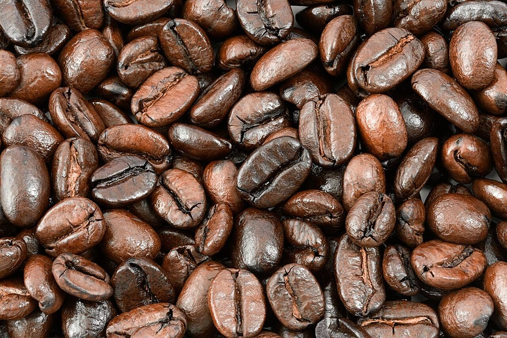

第一曲
店のこと
お店について確認できているのは、所在地とInstagramのアカウントだけです。
このページの「想像してみる」部分は、制作側が想像して書いたものです。お店の実際の様子・考え・メニューとは関係がありません。
確認できていること
- 店名は「Sweet William Cafe」、業種はカフェ
- 所在地は鹿児島県鹿児島市樋之口町６−１６(〒892-0845)
- 連絡はInstagramから
- 営業時間・定休日・メニュー・価格・ご予約・駐車場は準備中

想像してみる
「Sweet」という名前から
由来は分かりません。制作側は、甘いものや、ほっとする一杯をそっと思い浮かべました。音楽の組曲のように、少しずつ違う味が順番に並ぶお店かもしれない、という想像です(実際のお店の姿ではありません)。

